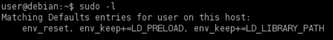

environment variables
Programs run through sudo can inherit the environment variables from the user’s environment.
In the /etc/sudoers config file,
◇ if the
env_reset option is set, sudo will run programs in a new, minimal environment.
◇ The
env_keep option can be used to keep certain environment variables from the user’s environment.
The configured options are displayed when running sudo -l
